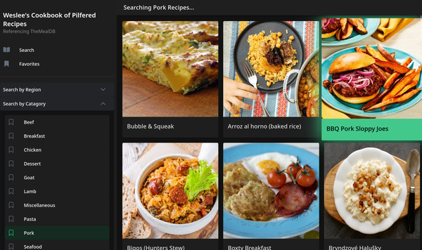

My Various Cookbooks
The cookbook was by far my favorite, and still lasting project. Something about a practical utility that I could host or display in multiple ways. It was at some point in my first SQL class that I found recipes were a great benchmark for creating databases. For a couple reasons, really:
- I've got an abundance of recipes to use, either my own cookbooks or online recipes
- It's quite easy to design data relations between recipes to any amount of depth, ranging just from source or even to individual ingredient details
- Thanks to being easily represented in text, it can range from CLI responses or fully rendered webpages
- There's tons of recipes out in the world, and it's nice to put them out there.
The particular cookbook I always look back on is one designed in ReactJS utilizing an external recipe database. Originally I had wanted to make some way to comfortably parse the recipes from the WikiBooks Cookbook section, but I ended up settling on TheMealDB which is another free resource. There were a few more iterations made, including one with Flutter that would randomly select recipes and a version in HTMX that used content replacement to show new recipe pages without loading the whole page.

Click here to view the page!A cooking aid also just feels like a nice, practical thing to make. Cooking is one of those things that just about anyone can take a crack at, and the pleasure of building something that I can then go "alright, let's use this" and then cook something from it feels fantastic.